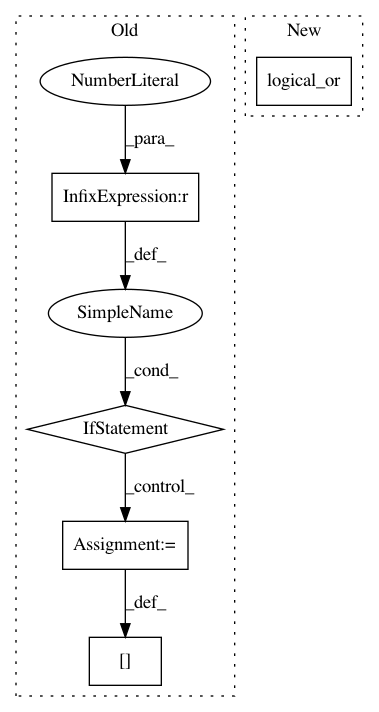

fbc23881c651d69da1f7ba92bdab78009d33bf94,memory.py,ReplayMemory,__next__,#ReplayMemory#,148
Before Change
state_stack[-1] = self.transitions.data[self.current_idx].state
prev_timestep = self.transitions.data[self.current_idx].timestep
for t in reversed(range(self.history - 1)):
if prev_timestep == 0:
state_stack[t] = blank_trans.state // If future frame has timestep 0
else:
state_stack[t] = self.transitions.data[self.current_idx + t - self.history + 1].state
prev_timestep -= 1
state = torch.stack(state_stack, 0).to(dtype=torch.float32, device=self.device).div_(255) // Agent will turn into batch
self.current_idx += 1
return state
After Change
transitions_firsts = transitions["timestep"] == 0
blank_mask = np.zeros_like(transitions_firsts, dtype=np.bool_)
for t in reversed(range(self.history - 1)):
blank_mask[t] = np.logical_or(blank_mask[t + 1], transitions_firsts[t + 1]) // If future frame has timestep 0
transitions[blank_mask] = blank_trans
state = torch.tensor(transitions["state"], dtype=torch.float32, device=self.device).div_(255) // Agent will turn into batch
self.current_idx += 1
In pattern: SUPERPATTERN
Frequency: 3
Non-data size: 5
Instances
Project Name: Kaixhin/Rainbow
Commit Name: fbc23881c651d69da1f7ba92bdab78009d33bf94
Time: 2020-08-20
Author: 32273096+Aladoro@users.noreply.github.com
File Name: memory.py
Class Name: ReplayMemory
Method Name: __next__
Project Name: snorkel-team/snorkel
Commit Name: 98e6a637cf96d77e9e309c1049f52387f11e8ed7
Time: 2017-09-25
Author: rogergoldman@gmail.com
File Name: snorkel/utils.py
Class Name:
Method Name: matrix_conflicts
Project Name: interactiveaudiolab/nussl
Commit Name: d882543331fd9035746cc3e4115f4ad8ac119324
Time: 2017-08-08
Author: daniel.felixkim@gmail.com
File Name: nussl/separation/duet.py
Class Name: Duet
Method Name: _compute_masks